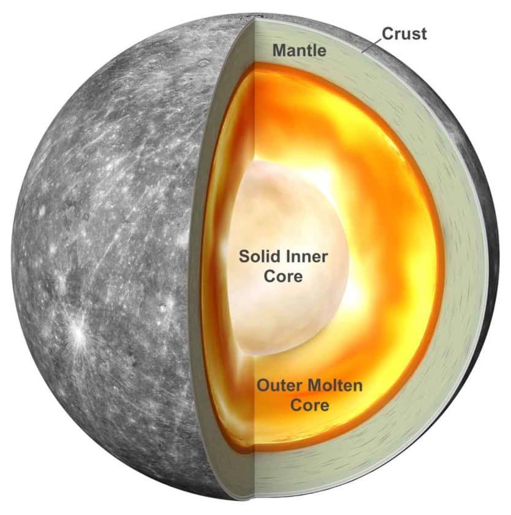

(2024/03/13)
水星の概要
太陽系第一惑星です。
直径が4900kmで月の直径の3474kmより少し大きいです。
太陽から僅か5800万kmしかなく、間近で太陽風にさらされたこと、重力が小さいことで、
大気がほとんどなく昼側は430℃、夜側は-160℃と温度差が激しいです。
58日16時間で自転して87日23時間で公転しています。
地軸の傾きが0°なので、常に太陽光が当たらず-160℃が保たれている部分があります。
水星の構造
基本構造

中心から鉄とニッケルの核、マントル、地殻で構成された岩石惑星です。
核の部分が他の惑星と比べて大きな割合になっています。
核が大きい理由
原始惑星の合体説
水星ができるときに原始惑星同士がぶつかってそれぞれの核が合体して他は吹き飛んだという説です。
(※従来の説)
磁力説
水星が形成されるときに原始太陽の強い磁力により太陽に近かった水星は、
優先的に金属が取り込まれていった結果大きな金属の核ができたという説です。
(※東北大学大学院理学研究科の説)
地球のような岩石天体を構成する物質中で金属が占める割合は、
太陽からの距離の関数として減少するようです。